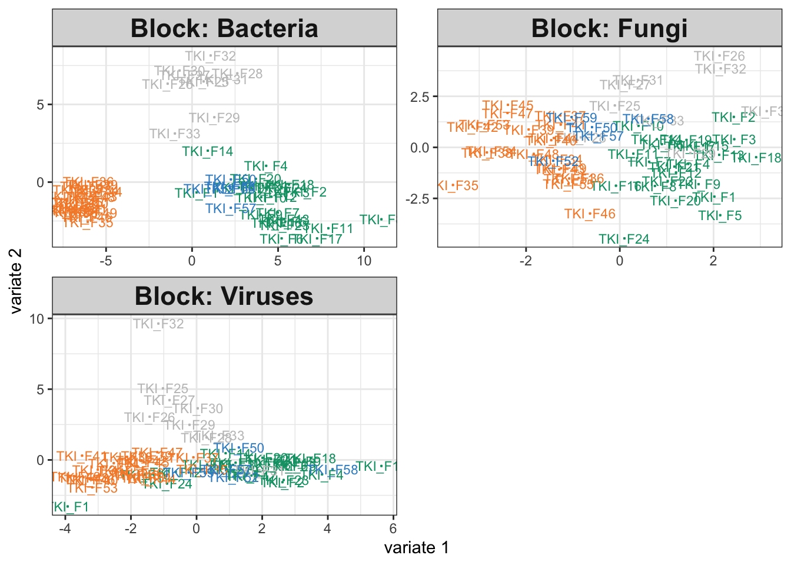

How would the output have looked if 16S community composition had not been related to disease or antibiotics groups? Since integrative analysis prioritizes similarities across sources, we expect this to mask some of the real differences in the fungal and virus data as well. We can use simulation to gauge the extent of this masking.
Our first step is to train a simulator. We’re just learning four different
setes of parameters for each of the four observed groups. This is not as nuanced
as learning separate effects for sepsis and antibiotics, but it will be enough
for illustration. We have used map to estimate a simulator for each assay in
the icu list.
So far, we haven’t tried removing any relationships present in the 16S assay, and indeed our integrative analysis output on the simulated data looks comparable to that from the original study.
icu_sim <- join_copula(simulator, copula_adaptive()) |>
sample() |>
split_assays()
fit_sim <- exper_splsda(icu_sim)
plotIndiv(fit_sim)
## comp1 comp2
## Bacteria 0.8580402 0.8191458
## Fungi 0.6513668 0.4845247
## Viruses 0.6118091 0.8047067Exercise: Modify the simulator above so that the 16S group no longer depends on disease cateogry. This will allow us to study how the integrative analysis output changes when the data are not alignable.
Solution: We need to define a new link that no longer depends on Category. One solution
is to modify the existing simulator in place using mutate.
Since we are modifying all taxa, a simpler solution is to just define a new simulator from scratch.